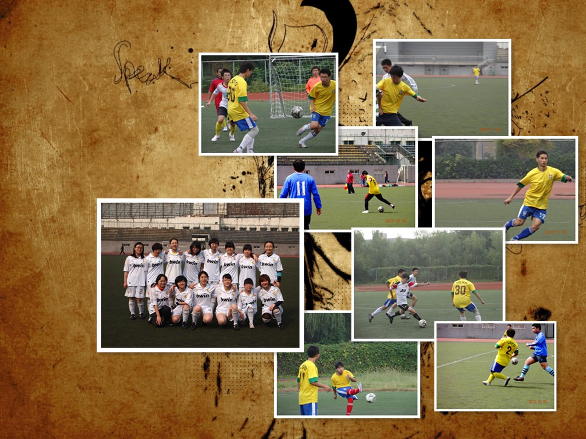

Welcome!
Personal Information
Name: Meng Wang
Date of Birth: Oct,18th,1992
Gender: Female
Nationality: China
Health: Excellent
Education Background
B.S. Physics, University of Science & Technology of China(USTC) 09/11--Present
Major in Optical Information Science and Technology
Contact Information
Room 320-220, East Campus, USTC, Hefei, Anhui, 230026
Mobile Phone: (86)1515-590-0207
Skype Number: meng2william
E-mail: gg159220@mail.ustc.edu.cn
My Life.
Right here I've got something you gonna be interested in!
Strong perception & intellect;with widen and swift thinking; able to be quickly adapted to different environmenet.
Diligent;with sureness;responsible;everytime fulfil my duties to my own work.
Conscientiously, absorbedly work in a planned and order way;pursue the perfection.
Good image;temperate, calm and steady personality; strong affinity;good at getting along with people.
Patient;have holding capacity to pressure and setback.
The joy of living comes from what we put into living, not from what we seek to get from it.
View details
Right here I've got something you gonna be interested in!
I entered a school band because of my strong interest of singing, acting as a vocal.That is an amazing experience for me.We participated in many concerts performed in or across universities, which have enriched my campus life greatly..
View all works
The joy of living comes from what we put into living, not from what we seek to get from it.
View details
Right here I've got something you gonna be interested in!
I love photography. It is a wonderful experience in life's journey. We can use a camera to freeze each unrepeatable moment forever, so it can become a long-term preservation and sharing memories.
View all works
The joy of living comes from what we put into living, not from what we seek to get from it.
View details
Right here I've got something you gonna be interested in!
Having positive work attitude and being willing and able to work diligently without supervision, I become a manager of a men football team which is enrolled at school and has 25 players. Arranging football games with other teams, finding new outstanding players and keeping in touch with our players are my basic work, from which I improve my ability on communicating with others especially the teamwork.
View all works

The joy of living comes from what we put into living, not from what we seek to get from it.
View details
Right here I've got something you gonna be interested in!
Gastronomy as a fine art brings happiness to us everyday.Cooking and dining cannot be treated as a regular work but an access to making us enjoy our life better.I love cooking and the pleasure it brings to me.
View all works
The joy of living comes from what we put into living, not from what we seek to get from it.
View details
Youth is beautiful and precious for it's pure, it can be met but hard to possess, and for it hardly return.